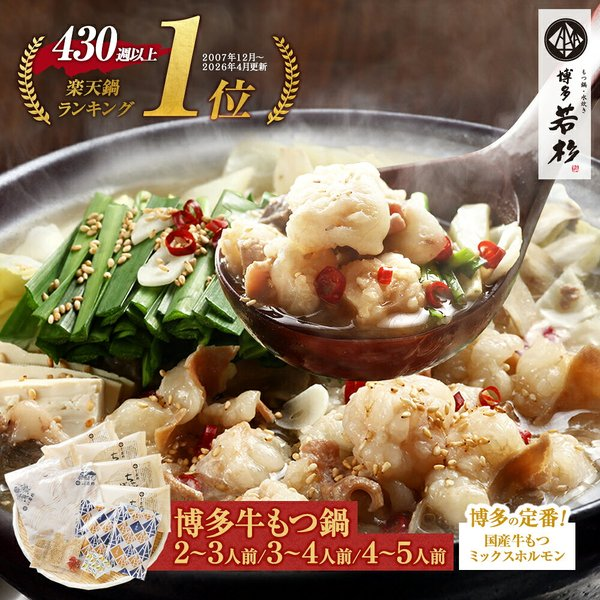
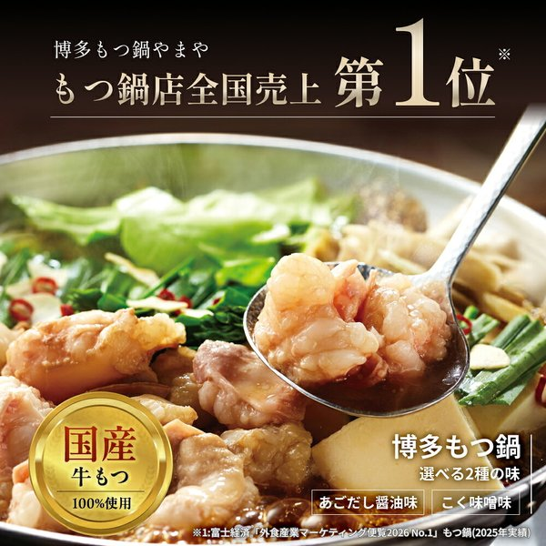
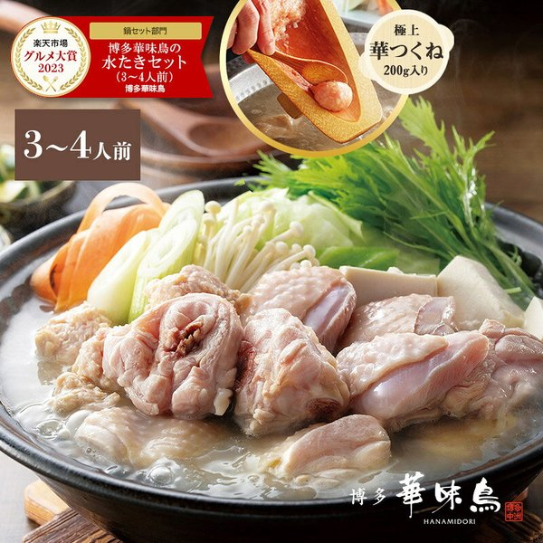
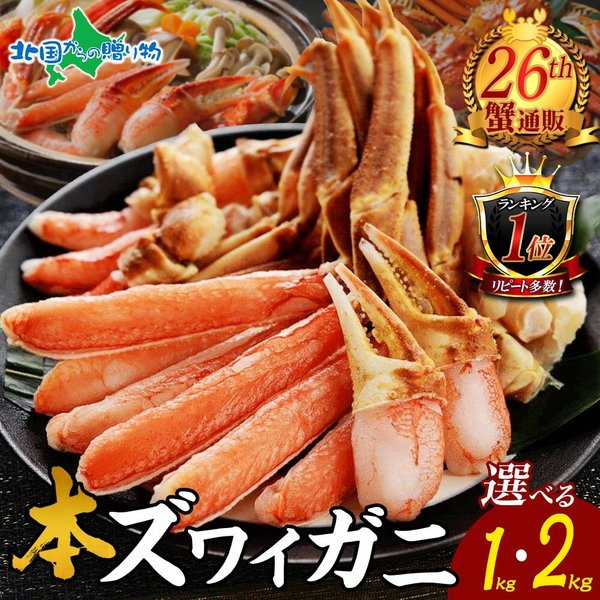
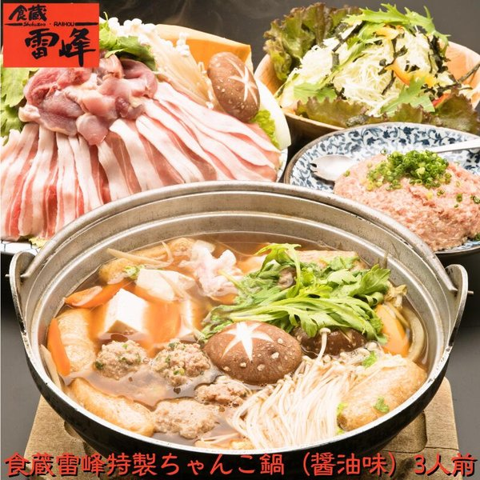
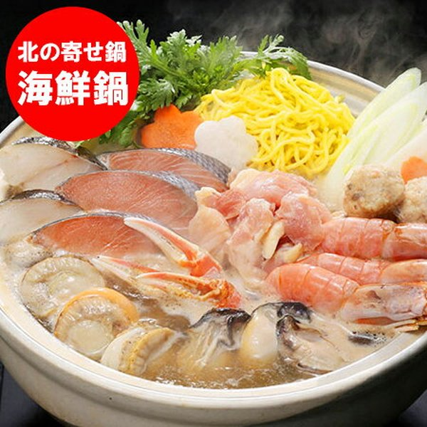
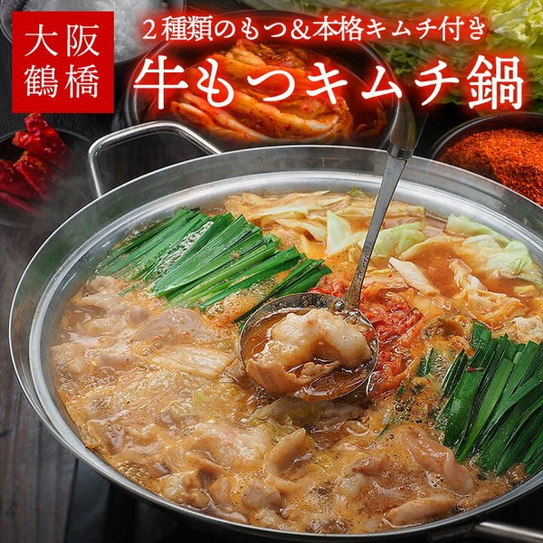
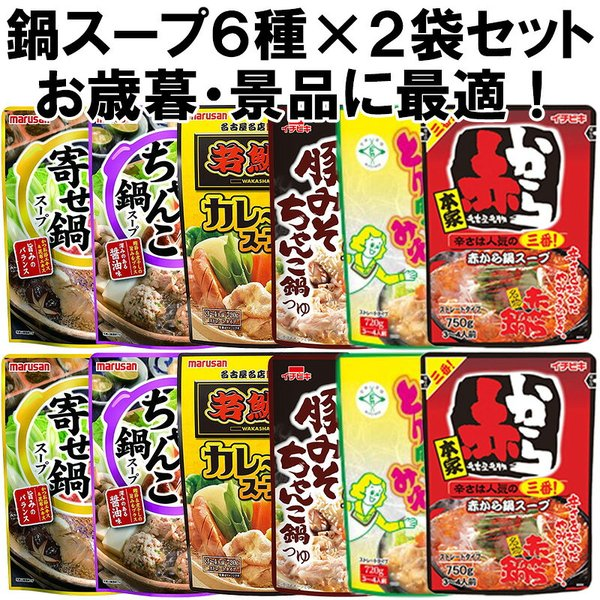
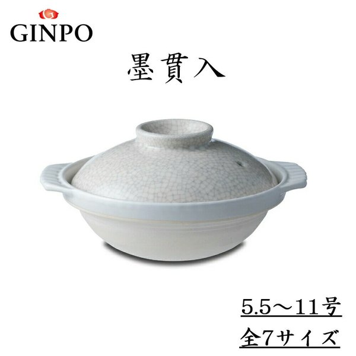

【冬のお取り寄せ】もつ鍋・カニ鍋・水炊き！絶品鍋セットおすすめ10選
冬の鍋は、具材を買い集める時間がいちばん面倒です。お取り寄せの鍋セットなら、スープと具材が箱で届くので、帰り道に野菜を少し買うだけで食卓が完成します。
選ぶ軸は、味の系統と人数、そして締めまで楽しめるかどうか。もつ鍋は濃い味で締めの麺が合い、水炊きはスープを飲みながら食べる鍋、かにしゃぶは下ごしらえの少なさが魅力です。3〜4人で囲むなら3〜4人前を1セット、味を変えたいならスープの詰め合わせを足すと飽きません。
本記事では、楽天市場で人気・高評価の冬の鍋セット10選を、実売価格とレビュー評価つきで写真付き紹介します。
- おすすめ10選 スペック・特徴比較表
- BEST 1｜牛もつ鍋セット（2〜3人前／3〜4人前／4〜5人前）
- BEST 2｜博多もつ鍋 あごだし醤油味・こく味噌味
- BEST 3｜水炊きセット（3〜4人前・柚子胡椒付き）
- BEST 4｜ズワイガニ かにしゃぶセット（1kg／2kg・カット済み）
- BEST 5｜時津風部屋のちゃんこ鍋（3人前）
- BEST 6｜海鮮 寄せ鍋セット（北海道）
- BEST 7｜牛もつキムチ鍋セット（牛もつ400g・白菜キムチ250g・うどん付き）
- BEST 8｜嬉野温泉名物 温泉湯豆腐（2〜3人前）
- BEST 9｜鍋スープ6種 各2袋セット
- BEST 10｜貫入土鍋（5.5号〜11号）
- 【読者負担0円】買わなくても得する無料サービス
- まとめ：冬の鍋セット10選の選び方
| 順位 | 商品名 | ブランド | 最大の特徴・おすすめ理由 | 総合評価 |
|---|---|---|---|---|
| BEST 1 | 牛もつ鍋セット（2〜3人前／3〜4人前／4〜5人前） | 博多若杉 | 国産牛モツを使用 | 4.48 |
| BEST 2 | 博多もつ鍋 あごだし醤油味・こく味噌味 | やまや | あごだしの効いたスープ | 4.64 |
| BEST 3 | 水炊きセット（3〜4人前・柚子胡椒付き） | 博多華味鳥 | 鶏の旨みが強いスープ | 4.61 |
| BEST 4 | ズワイガニ かにしゃぶセット（1kg／2kg・カット済み） | Snowland | カット済みで下ごしらえが不要 | 4.25 |
| BEST 5 | 時津風部屋のちゃんこ鍋（3人前） | ちゃんこ鍋本舗 来宝 | 相撲部屋のちゃんこが自宅で食べられる | 5.00 |
| BEST 6 | 海鮮 寄せ鍋セット（北海道） | 北の蔵 | 海鮮の具材がまとめて届く | 4.61 |
| BEST 7 | 牛もつキムチ鍋セット（牛もつ400g・白菜キムチ250g・うどん付き） | 大阪鶴橋 | キムチと牛もつの組み合わせ | 4.82 |
| BEST 8 | 嬉野温泉名物 温泉湯豆腐（2〜3人前） | 佐賀とうふ | 煮るととろける独特の食感 | 4.73 |
| BEST 9 | 鍋スープ6種 各2袋セット | イチビキ／まつや ほか | 6種の味を試せる | 4.81 |
| BEST 10 | 貫入土鍋（5.5号〜11号） | 銀峯陶器 | サイズを7段階から選べる | 4.58 |
牛もつ鍋セット（2〜3人前／3〜4人前／4〜5人前）

国産牛のミックスホルモンを使った博多若杉のもつ鍋セット。2〜3人前から4〜5人前まで選べ、スープと具材がそろっているので鍋ひとつで完成します。人数に合わせてサイズを選べるのが便利です。楽天市場での実売価格は約4,480円（2026年11月時点）。
- 国産牛モツを使用
- 人数に合わせて3サイズから選べる
- レビュー9,530件・評価4.48
- 冷凍庫に置く場所を確保する必要がある
博多もつ鍋 あごだし醤油味・こく味噌味

明太子で知られるやまやの博多もつ鍋。あごだしの効いた醤油味と、こくのある味噌味から選べます。スープに旨みがあるので、最後にちゃんぽん麺やご飯を入れて締めまで楽しめます。楽天市場での実売価格は約4,070円（2026年11月時点）。
- あごだしの効いたスープ
- 醤油と味噌から選べる
- 締めの麺やご飯まで楽しめる
- 野菜は別に用意する必要がある
水炊きセット（3〜4人前・柚子胡椒付き）

水炊きで知られる博多華味鳥のセット。鶏の旨みがしっかり出るスープで、3〜4人前、柚子胡椒付きです。ポン酢をかける前に、まずスープを飲みながら鶏を味わう食べ方ができます。楽天市場での実売価格は約5,225円（2026年11月時点）。
- 鶏の旨みが強いスープ
- 柚子胡椒付き
- レビュー2,266件・評価4.61
- 鶏肉を煮る時間が要るので、もつ鍋より調理に手間がかかる
ズワイガニ かにしゃぶセット（1kg／2kg・カット済み）

カット済みのズワイガニを、かにしゃぶ用に仕立てたセット。1kgと2kgから選べ、解凍して鍋に入れるだけで蟹の甘みを楽しめます。殻むきの手間を省きたい人、年末に蟹鍋を囲みたい人に向いています。楽天市場での実売価格は約8,980円（2026年11月時点）。
- カット済みで下ごしらえが不要
- 1kg・2kgから選べる
- レビュー5,179件の実績
- 解凍に時間がかかるので前日から冷蔵庫へ移す
時津風部屋のちゃんこ鍋（3人前）

30年以上作り続けられているちゃんこ鍋。時津風部屋の力士も食べているという、相撲部屋の味です。3人前で、肉や野菜、つくねなどの具材が入っており、鍋ひとつでちゃんこが完成します。楽天市場での実売価格は約8,940円（2026年11月時点）。
- 相撲部屋のちゃんこが自宅で食べられる
- 具材がそろった3人前
- 評価5.0の新作
- レビュー数がまだ少なく、好みは試してみないと分からない
海鮮 寄せ鍋セット（北海道）

北海道の海鮮を寄せ鍋用にまとめたセット。魚介の旨みがスープに出るので、味付けは塩か醤油を少量足すだけで済みます。魚介中心の鍋を家で食べたい人、あっさりした鍋が好きな人向けです。楽天市場での実売価格は約5,580円（2026年11月時点）。
- 海鮮の具材がまとめて届く
- スープに旨みが出る
- 最短発送に対応
- 魚介の種類は届いてからのお楽しみ
牛もつキムチ鍋セット（牛もつ400g・白菜キムチ250g・うどん付き）

牛もつミックス400g、特製もつ鍋スープ、白菜キムチ250g、鍋用うどんがセットになったキムチ鍋。辛さと旨みのバランスが良く、締めのうどんまで付いています。辛い鍋が好きな人に向いています。楽天市場での実売価格は約2,980円（2026年11月時点）。
- キムチと牛もつの組み合わせ
- 締めのうどん付き
- レビュー33件・評価4.82
- 辛さは調整できないので、辛いものが苦手な人には不向き
嬉野温泉名物 温泉湯豆腐（2〜3人前）
日本三大美肌の湯で知られる嬉野温泉の名物、温泉湯豆腐のセット。佐賀県産大豆の豆腐が、煮るととろける独特の食感になります。あっさりした鍋を家族で食べたい人に向いています。楽天市場での実売価格は約2,700円（2026年11月時点）。
- 煮るととろける独特の食感
- 佐賀県産大豆を使用
- レビュー958件・評価4.73
- 豆腐が崩れやすいので、煮すぎないよう火加減に注意する
鍋スープ6種 各2袋セット

ちゃんこ鍋、寄せ鍋、豚みそちゃんこ鍋、赤から鍋、とり野菜みそ鍋など、鍋スープ6種が各2袋ずつ入ったセット。具材だけ買えば、気分に合わせて味を変えられます。鍋の味に飽きやすい家庭向けです。楽天市場での実売価格は約5,000円（2026年11月時点）。
- 6種の味を試せる
- 各2袋で2回ずつ楽しめる
- 1袋あたり400円台
- 具材はすべて別に用意する必要がある
貫入土鍋（5.5号〜11号）

万古焼の土鍋。5.5号から11号までサイズを選べ、2人用の小さめから大人数用まで対応します。蓄熱性が高く、火を止めた後もしばらく煮え続けるので、もつ鍋や水炊きの仕上げに向いています。楽天市場での実売価格は約2,980円（2026年11月時点）。
- サイズを7段階から選べる
- 蓄熱性が高く冷めにくい
- 日本製（万古焼）
- 陶器なので重く、洗うときに扱いが慎重になる
この記事の商品を買う前に、まずは無料で得する選択肢をチェック。どれも登録・利用は0円で、無料期間中に解約すれば料金はかかりません。読みたい雑誌がある人、ポイントを貯めたい人、アンケートなら気軽という人、それぞれに合うものを選べます。
初回31日無料・無料期間中に解約すれば0円 → 楽天ポイントモール｜登録無料で毎日ポイ活
買い物なしでもポイントが貯まる無料サービス → 楽天インサイト｜アンケートに答えてポイント
登録無料・すきま時間のアンケートで貯まる → 楽天カード｜年会費永年無料
新規発行・年会費ずっと0円 →
4つのサービスの違いと使い分けは「出費0円で得する！買わずにポイントが貯まる無料サービス厳選4選」でまとめています。
💡 まとめ：冬の鍋セット10選の選び方
冬の鍋は、セットを1つ決めておけば平日の夜がかなり楽になります。もつ鍋か水炊きかを常備し、週末にかにしゃぶやちゃんこで変化をつける。スープの詰め合わせを足せば、同じ具材でも味が変わるので飽きません。土鍋を1つ持っておくと蓄熱で冷めにくく、最後まで温かいまま食べられます。
楽天市場では「5と0のつく日」や「お買い物マラソン」などのキャンペーンに合わせて購入すると、ポイント還元が最大化してお得に手に入ります。ぜひチェックしてみてくださいね。